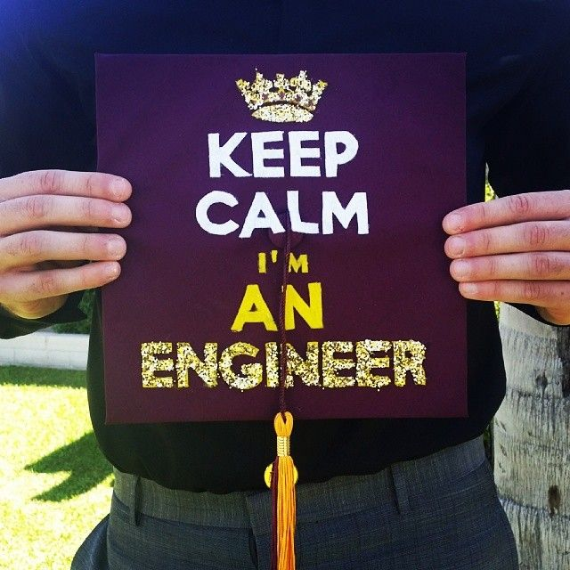

So here are some tips that on jow you can simply reward yourself for your whole grind in college.
Let's face it, it is already a normal thing most especially in the engineering that most of the time, you can only get small amount of sleep, far from the ideal sleep of a human that is 6-8 hours. It could be from those long quizzes you must prepare, the projects that are really hard to do, or even because of the practices for other subjects, you really deserve a good rest especially if you know you did your best to finish those specific requirements. You may now sleep without thinking anymore of those very hard requirements from your professors..
Finally, after finishing all your requirements for your subject and also passing it, maybe it is time to treat yourself with those foods that you really craved for a long time; you deserve it. Do not be too harsh to yourself and go get the foods you really want. It may be something sweets like chocolates, ice cream, cake, miktea, or anything more that you've always wanted.
After being immersed in an environment that is purely for education, go reward yourself by doing things that is completely not related to your usual routine in college. Go play the videogame you want, go and hang out with your friends, go to places you've never been before, or simply just stay at your home and relax yourself.
May this tips or methods that I share really help you throughout your college stay here at the De La Salle University. Always remember that if you feel like giving up to your current course, just think that many people also thought of but they chose not to give up, and now they have their degree that they've worked out for years and if they did it, I strongly believe that you can also do it!